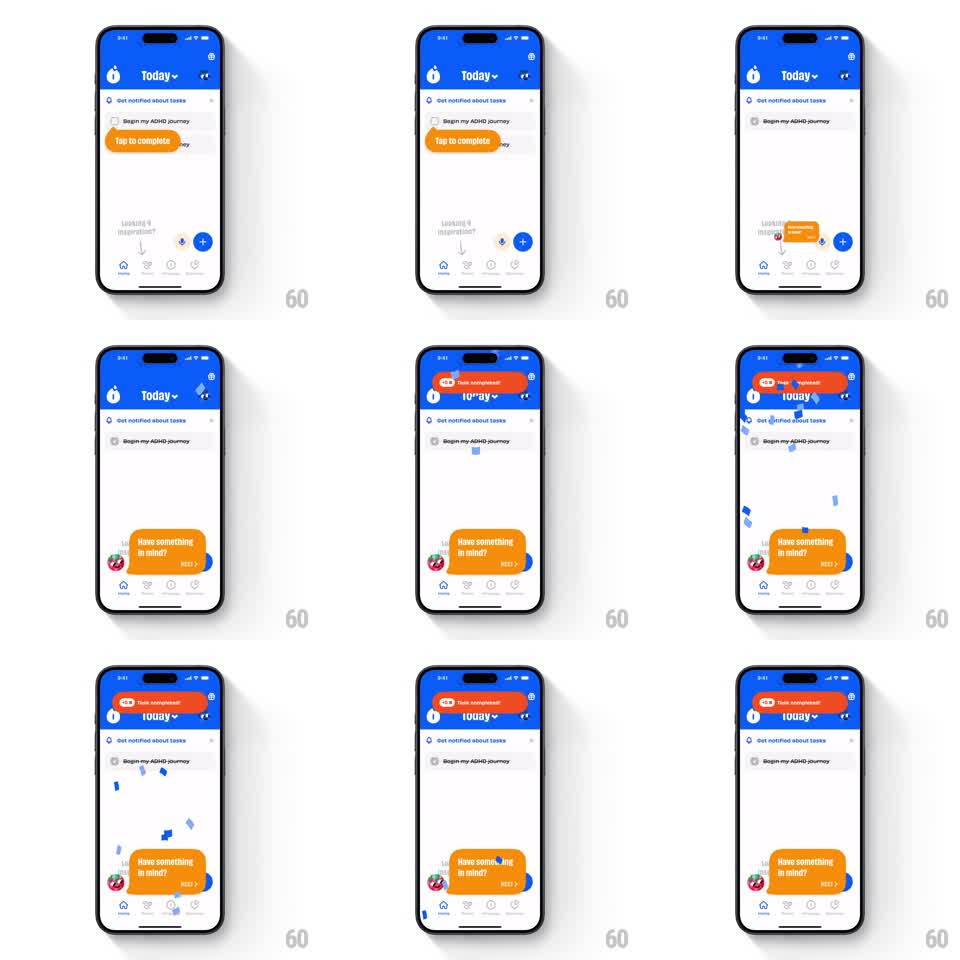

Media
Frame-by-frame

Rebuild this animation 1:1: Numo's task completion moment - tapping "Tap to complete" on a task fires a springy orange "Task completed!" toast over the header, rains blue confetti, and rolls in a follow-up tooltip at the bottom.

Rebuild this animation 1:1: Numo's task completion moment - tapping "Tap to complete" on a task fires a springy orange "Task completed!" toast over the header, rains blue confetti, and rolls in a follow-up tooltip at the bottom.
## Integration
Integration: stack-agnostic spec - springs given as stiffness/damping, timed motions as duration + curve; map every value to your framework and animation library of choice.
## Scene
Blue-header task screen: "Today" dropdown title, mascot icons, a task list ("Begin my ADHD journey" rows), an orange hint tooltip "Tap to complete" anchored to the first task, "Looking 4 inspiration?" empty-state hint, plus FAB, tab bar. Reward layer: orange toast ("+15 XP / Task completed!") and bottom tooltip ("Have something in mind?" with mascot and NEXT).
## Motion spec
Pattern: completion celebration sequence, ~3s.
- Task tap: the row's checkbox fills and the label strikes through (200ms).
- The toast slides in from the top (spring ~280/18, 400ms) overlapping the header, wobbling once on landing.
- 15-20 blue confetti bits spawn under the toast and rain down the screen (gravity + side sway, 1.5s, fade at the end).
- The bottom tooltip slides up (translateY 60px -> 0, spring ~320/20) 300ms after the toast lands.
- The toast auto-retracts after ~2s (slide up, 300ms ease-in); the tooltip persists.
## Calibration
- Confetti is brand-blue only and sparse; multicolor confetti would fight the blue header.
- The toast bounce is one wobble, not a repeating jiggle.
## Reduced motion
Toast and tooltip fade in place; no confetti.
## Don't miss
- The strike-through and the toast fire together - delaying the toast makes the reward feel disconnected from the tap.
- Confetti falls in front of the list but behind the toast; layer order matters.